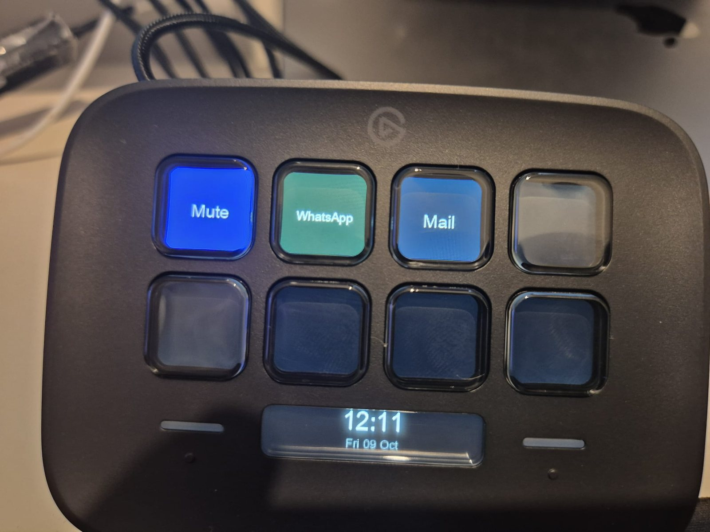
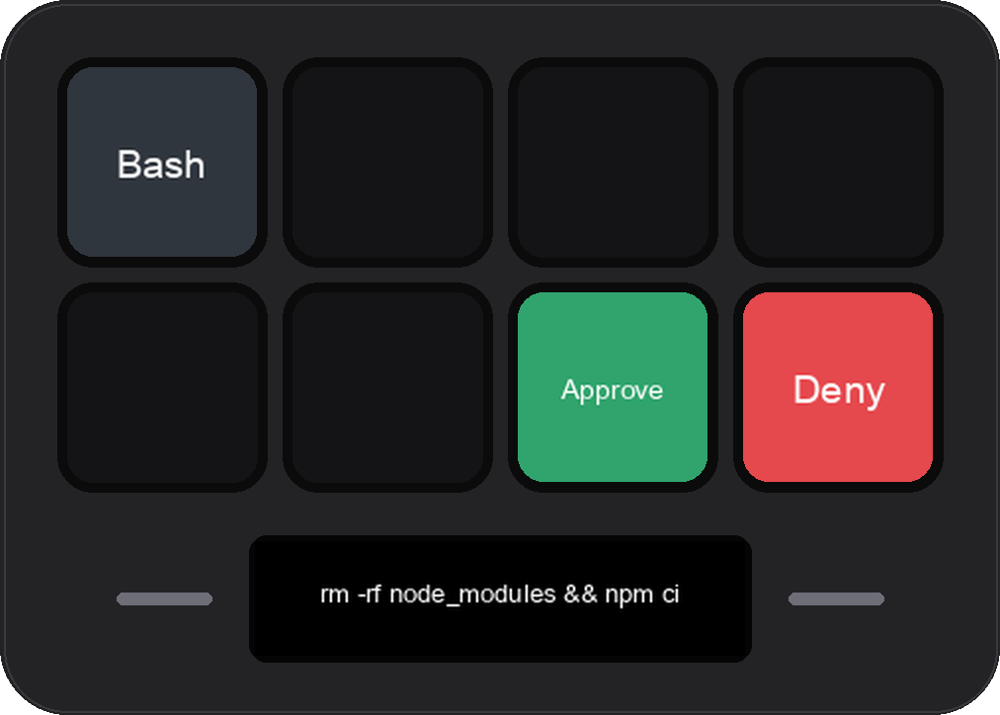
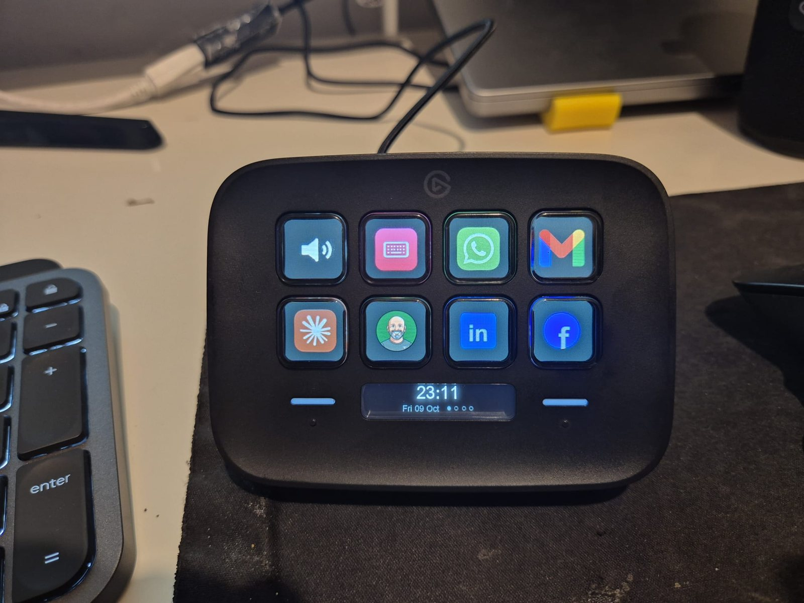
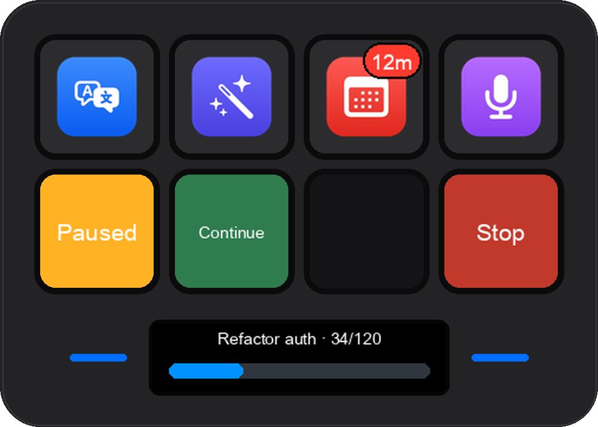
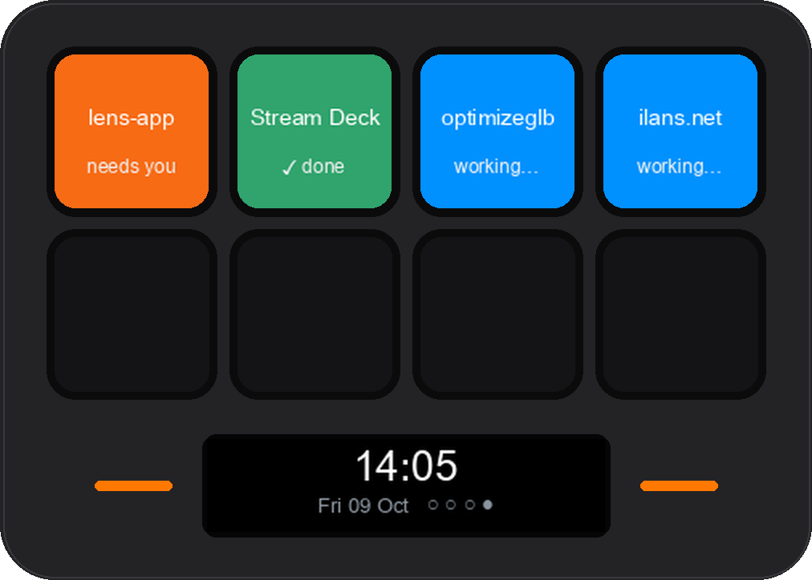
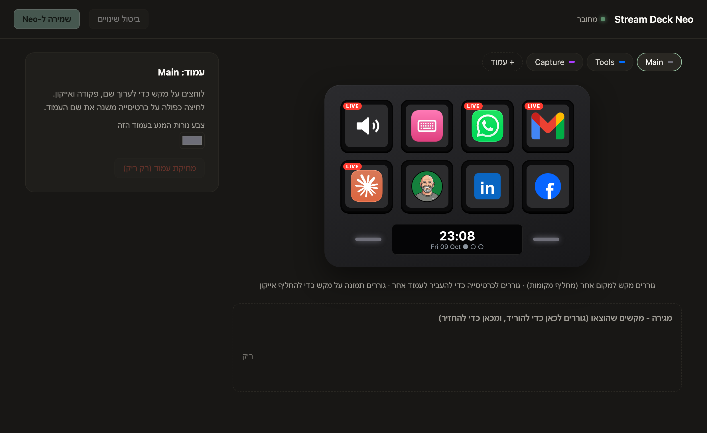

Most of my working day now has an agent in it. Usually more than one. And the interface between us is a chat window: it asks for permission in the chat, it tells me it finished in the chat, and if I want it to stop, I have to find the right window and press Escape. That is fine when I am looking at it. It is a bad place to be interrupted from, and a worse place to keep an eye on four sessions at once.
So when I bought a Stream Deck Neo, the small one with eight keys and a strip of a display, I was not thinking about streaming. I was thinking about a second channel. Something on the desk that an agent can light up, and that I can press without switching context.
It's a dumb device. Good.
The first decision was not to install Elgato's app at all. A Stream Deck turns out to be refreshingly simple: eight tiny screens under keys, a 248 by 58 pixel display, two touch strips, all on USB. The device does not decide anything. It accepts a picture for a key, and it reports that a key went down or up. Everything else lives in whatever program is talking to it, and the protocol has been documented by the open-source community for years.
That means a key is just a picture I draw and a command I run. I wrote a small daemon that owns the device, draws every key and the display itself, and opens a local HTTP endpoint so that anything on the Mac, a script, a hook, an agent, can say "put a badge on key two" or "ask the user this and tell me what they pressed".

Approve from the desk
The first real key was the one I had bought it for. Claude Code fires a hook whenever it is about to ask for permission. Mine sends the request to the daemon: the command appears on the display, and Approve and Deny light up on the bottom row. A press answers the agent directly and the terminal prompt never appears.
The part I cared about most was what happens when it fails. If I don't press anything within 25 seconds, if the daemon is down, or if the device is busy with another question, the hook returns nothing and Claude Code shows its normal prompt. The worst case is the old behaviour, never a stuck agent.

One honest note. Most of the time I run my sessions in a mode that never asks for permission at all, which means these keys never light up there. I found that out by testing the hook in a session that could not trigger it. The approval keys are for the sessions where I want a human in the loop, not for all of them.
The key I didn't plan
Halfway through the day I sent Claude a message that read zv gucs nuzr vut nn,rdo. I had typed Hebrew on the English keyboard layout, which anyone who writes in two alphabets does several times a day. Claude decoded it. The message itself was the feature request: select text typed on the wrong layout, press a key, and get the same keystrokes read on the other layout.
It is thirty lines, a fixed mapping between two keyboard layouts, no model involved, instant and free. It became the key I press most. The fancy AI keys I had planned, translate and rewrite, are used far less than the one that came out of a typo.
The same key also taught me the first lesson about physical interfaces. For a while it "sometimes converted and sometimes translated". The touch strips next to the display switch pages, they are sensitive, and on the second page the same position was Translate. Nothing on the device showed which page I was on. The fix was three small things: page dots on the display, touch strips that glow a different colour per page, and an automatic return to the first page after thirty idle seconds. On a device you use without looking, a mode you can't see is a bug.

macOS doesn't trust a background process
The daemon runs in the background, started by the system at login. That turned out to be the hardest constraint of the whole project, because macOS privacy permissions are designed around apps a person launches.
The push-to-talk key recorded perfect silence. The microphone worked from my terminal, and recorded nothing from the daemon. A background Python process is never shown the "allow microphone" prompt, and unlike some other privacy lists, the Microphone list in System Settings has no plus button to add something by hand. The calendar had the same problem. The fix for both was to stop asking as the daemon: each one is now a tiny app bundle with its own name and its own usage description, launched through open. macOS asks once on behalf of "StreamDeck Mic", I allow it, and it remembers. Anything behind a privacy prompt now goes through a small app with its own name.
The same family of problem showed up twice more. Granting Full Disk Access to Python did nothing until the service started the actual Python binary inside the app bundle, because macOS checks the program that was launched, and a virtualenv symlink is a different program. And sending keystrokes through AppleScript failed with a permission error no matter what I granted Python, because the request came from osascript, not from Python. Posting the key events directly from Python fixed it.
Voice, after watching Elgato do it
Elgato showed a demo at CES this year of Stream Deck actions exposed to an AI model, so you speak and the model chooses which key to press. Most of the pieces were already on my desk, so I built my own version.
Hold the Talk key and speak. A local Whisper server transcribes it, in Hebrew or English, in about half a second once it is warm. It holds 1.8 GB of memory, so it starts on the first press and shuts itself down after ten idle minutes. The text goes to Claude Haiku with every key on the device described as a tool it can call, plus a few built-ins: a timer of any length, a note on the display, switching pages. It calls exactly one, or answers a question from live context like the next meeting or which of my servers is down.
Two rules make it safe enough to leave on. The model can only choose from the closed list of keys and built-ins, never a free-form command. And keys with a physical effect, like the robot vacuum, ask for a Yes on the device before they run. Eight test phrases in two languages were all routed correctly, and a spoken timer reaches the display about 1.2 seconds after I let go of the key.
Letting the agents talk back
Everything so far is one-directional: I press, something happens. The more interesting half came from turning the device into a tool the agents can use themselves. I wrote a small MCP server, the standard way to give Claude new tools, that wraps the daemon.
An agent can now ask me a multiple-choice question on the keys and wait for the press. It can show a real progress bar on the display for a long task. And before a long multi-step job it can put Pause, Continue and Stop on the bottom row, then check between steps whether I pressed one. If I pressed Pause, the check simply blocks until I press Continue or Stop.


In the test run, a simulated task stopped at step 27 when I pressed Pause, resumed five seconds later on Continue, and at step 53 received a stop instruction, cleaned up, and removed its keys. That is the part of this I find genuinely new: stopping an agent from across the room, without finding its window.
The other half is the sessions page. The same hooks now track every Claude session: working, finished, or waiting for me. A page builds itself while sessions exist and disappears when they don't, one key per session, coloured by state and labelled with the session's real name from the app's sidebar. Pressing a key jumps straight to that session. With four sessions running, I no longer cycle through windows to find the one that is blocked.
There is one tool I was careful with. An agent can add a key to the device, which sounds harmless until you remember that a key runs a command, and that the agent may have read a web page written by someone else on the way. So from a conversation, an agent can only add keys that open an app, open a link, or run a script that already exists. Anything else has to be entered by me in the dashboard. Reviewing that rule, I found a gap the tests had missed: a link in double quotes with $(...) inside it still runs a command. It is closed now, and it is the kind of hole I would rather find than read about.
Moving it to another Mac
At the end of the day I packaged a work version for a second Mac: no personal notifications, no home servers, and an installer that needs neither Homebrew nor admin rights. I tested it the pessimistic way, as if it had just arrived by AirDrop: every file marked as downloaded, the system's own Python, no developer tools. That test caught four things that would have failed on the other machine. Gatekeeper blocked a bundled library because it had been copied read-only, so the "downloaded" flag could not be removed. Hebrew on the display came out reversed, because Pillow loads its text-shaping library by bare name at import time, and loading it by path first does not count. The device library's newest versions crash on Python 3.9 despite claiming to support it. And the calendar helper sometimes finished before the command waiting for it noticed.
Rearranging the keys got a dashboard too: drag a key to swap it, drop an image on a key to replace its icon, and save straight to the device. It shares the same guarded write path as the agents, so a web page open in another tab can't rewrite my keys.

What a day was worth
Some of this is a gadget, and I don't want to pretend otherwise. A mute key with an icon is a mute key. But two parts changed how I work, and both are about attention rather than speed. Status in peripheral vision: I know which sessions are done without looking for them. And decisions without a context switch: approve, pick an option, pause, stop, one press from wherever I am.
The caveats are real. All of this was built in a single day, and some of it has only been tested by me, on my desk. The microphone goes dark when the laptop lid is closed, which is a hardware privacy switch and not something software can route around. And the approval keys only matter in sessions where I let the agent ask.
What surprised me is how much of an interface for agents is not in the agent. It is in the ten thousand small decisions about who is allowed to ask what, and how you notice when something is waiting for you. Eight keys turned out to be a good place to make those decisions.